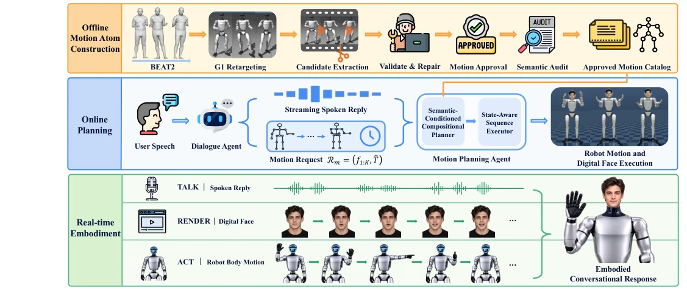
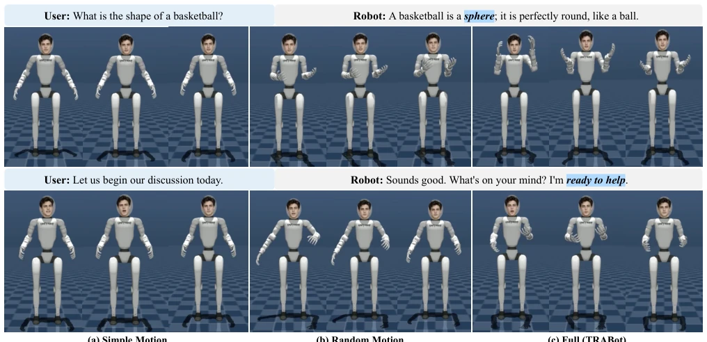

This TRABot framework acts like an astute "action library manager," rather than an all-powerful generator. It chunks BEAT2 actions, verifies them, labels them, and then assembles them according to dialogue budgets. The advantages lie in physical feasibility and semantic alignment, but the disadvantages are obvious: action diversity is locked by the offline library, akin to "a clever woman cannot cook without rice." Although it achieves synchronization of face, voice, and body, the essence is retrieval-based planning, not end-to-end generation, and it may be at a loss for unseen semantic combinations. However, achieving multi-modal synchronization on physical robots is indeed not easy; this engineering implementation approach is commendable, though generalization is questionable. Compared to pure generation models, it is more stable, but flexibility is significantly reduced.
Existing embodied interaction systems often separate the face and body. Talking-face models like SyncTalk [25] only handle facial rendering, ignoring robot joint constraints; co-speech gesture generation like Gesticulator [2] only handles limbs, ignoring facial expressions. Full-body robots like Haru [13] have expressions but fixed action libraries. This "platter-style" solution leads to semantic desynchronization. This paper aims to solve the spatiotemporal coordination problem between facial animation and physical robot actions under streaming speech-driven conditions, ensuring expressions, speech, and gestures are semantically coherent, avoiding the embarrassment of "mouth moves but body doesn't" or "expressions and gestures conflict." Existing work mostly focuses on virtual humans, lacking consideration of physical robot kinematic constraints, leading to difficulties in implementation.
The core is "motion atoms" and "semantic planning." In the offline phase, BEAT2 long sequences redirected by G1 are chunked into "motion atoms," verified by MuJoCo dynamics (joint limits, acceleration/deceleration) and Qwen3-VL semantic labeling, forming an available library. In the online phase, the dialogue Agent outputs intent sequences and duration budgets. The planner employs dynamic programming and beam search, selecting the longest feasible atom sequence within the budget, and handling state-aware transitions (minimum-jerk). Finally, SoulX-FlashHead [7] drives the face, executing synchronously with speech and body actions via a shared audio stream, forming a closed loop. This modular design sacrifices generation flexibility but ensures real-time performance and physical safety. The construction of the atom library is core, ensuring action executability, rather than merely pursuing visual fidelity.

Fig. 1. Overview of TRABot. Offline Motion Atom Construction Agent converts G1-retargeted BEAT2 motion into an approved catalog of Robot-Ready Semantic Motion Atoms. Online the Dialogue Agent generates streaming reply audio and a semantic motion request. The Motion Planning Agent composes approved atoms and constructs state-dependent transitions, while the Facial Animation Agent generates facial frames from the same audio stream. The Streaming Face-Speech-Body Integration System executes speech, facial animation, and robot body motion concurrently.
Tested on 12 dialogue cases. Baselines include speech only, speech + face, random actions, etc. Metrics include Binary/Gaussian BAS (beat alignment) and user study. Results show the Full model is optimal in BAS scores and naturalness ranking, with user preference reaching 84.58%. Compared to random matching, the planner improved atom utilization by 17.5% and reduced unused budget by 58.2%. This proves semantic constraint planning aligns better with speech stress than random combinations. Although the sample size is small, quantitative and qualitative results are consistent, verifying the framework's effectiveness. The user study further indicates that multi-modal collaboration significantly enhances the naturalness of interaction, superior to single modalities or random combinations.

Fig. 2. Qualitative visualizations of action-speech alignment from the user study. Each row shows a user utterance, the robot’s spoken reply, and body- motion keyframes under Simple Motion, Random Motion, and Full (TRABot). Blue-highlighted words or phrases indicate the speech content corresponding to the displayed actions.